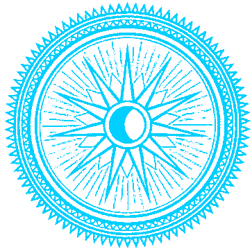

Ascendentes
Saiba mais sobre seu signoAries ✧
Touro ✧
Gemeos ✧
Cancer ✧
Virgem ✧
Libra ✧
Leao
Escorpiao ✧
Sagitario ✧
Capricornio ✧
Aquario ✧
Peixes
 Peixes
Peixes
20/02 - 20/03
Peixes é o final do zodíaco e traz consigo a lição e experiência de cada um dos signos que o
antecedem. A regência de Netuno representa o contato com o invisível, o plano sutil, a sensitividade,
a mediunidade, a fé, o sacrifício, como “sacro-ofício”, o que pode levar os nativos do signo ao papel de
mártir, ou de vítima...
Características:
intuição, receptividade, percepção sensível, afetividade, inspiração, arte,
impressionabilidade, mediunidade, imaginação, romantismo, criatividade, empatia, sonhos, fantasia,
ilusão, confusão, escapismo.
Ascendentes de Peixes
